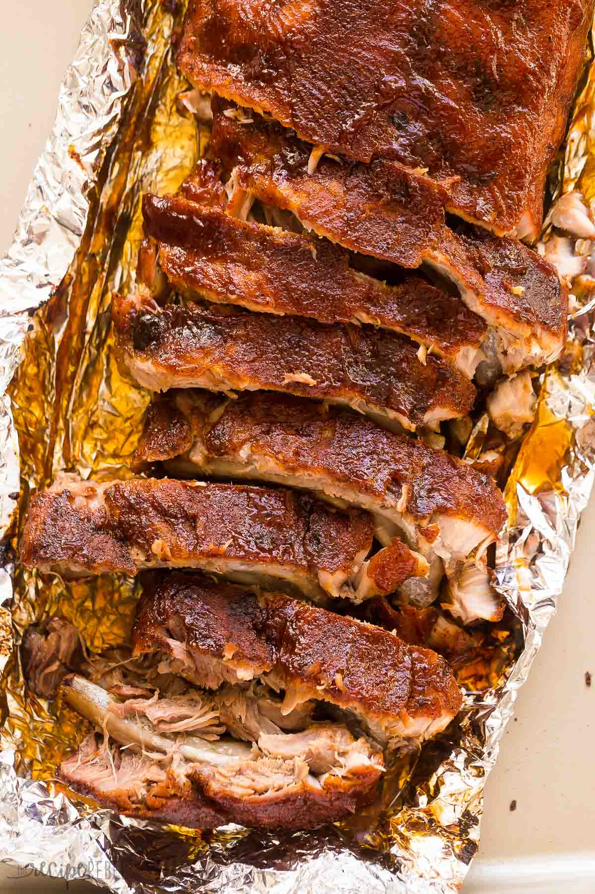

Oven Baked Ribs

Description
Oven baked ribs that are insanely savory and not too sweet
Ingredients
1 Rack of Ribs
1 Cup of Siracha
1 tbsp Salt
1 tbsp Pepper
2 tbsp Cumin Seeds
1 tbsp Garlic Powder
1 tbsp Onion Powder
1 tbsp of Paprika
1 tbsp of Cayenne Pepper
1 tbsp of Oregano
Steps
- Combine salt, pepper, garlic powder, onion powder, cumin, paprika, and oregano into a dry rub.
- Rub Siracha onto both sides of the ribs as a binder
- Spread the dry rub evenly along both sides of the ribs
- Bake in the oven at 300 degrees Fahrenheit for 20 minutes or until 160 degrees Fahrenheit internally